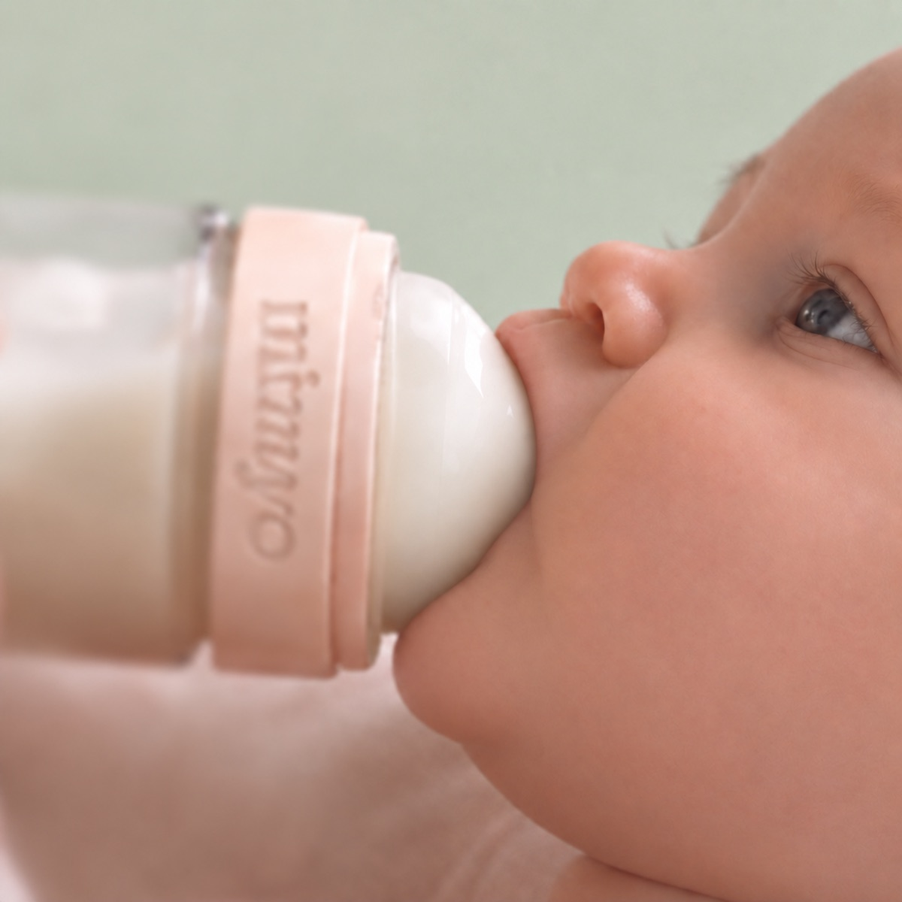
Nasal Breathing
With Mimyo, your baby does the work. They put in the effort with every feed, the same way they would at the breast.
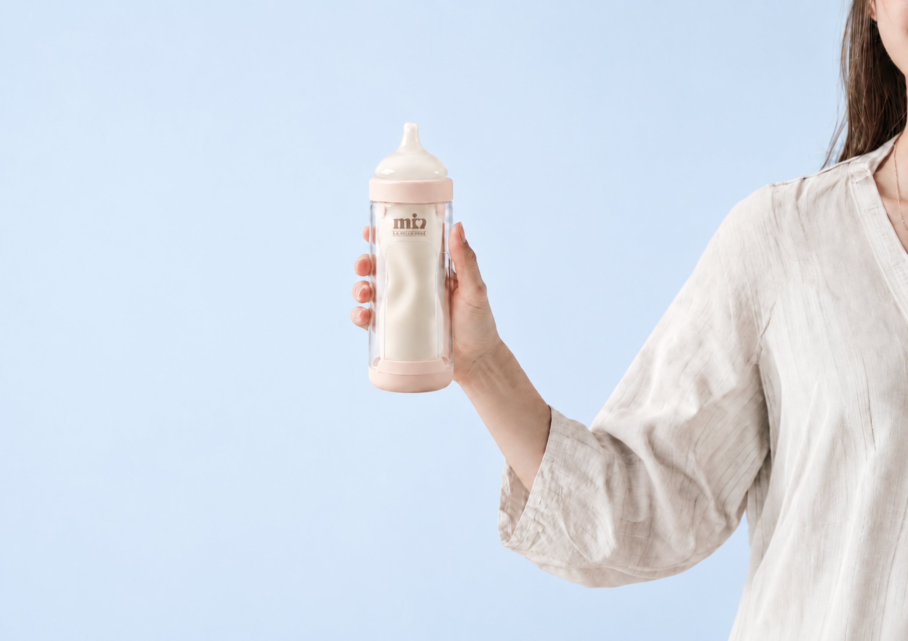
Mimyo is the only medical feeding device that mimics the breast.
At the breast, your baby has to work for the milk. The tongue compresses and the jaw pulls, while your baby breathes through the nose.
That effort develops your baby's jaw and airway.
Traditional bottles take the effort away, because milk flows out under gravity whether your baby is ready for it or not.
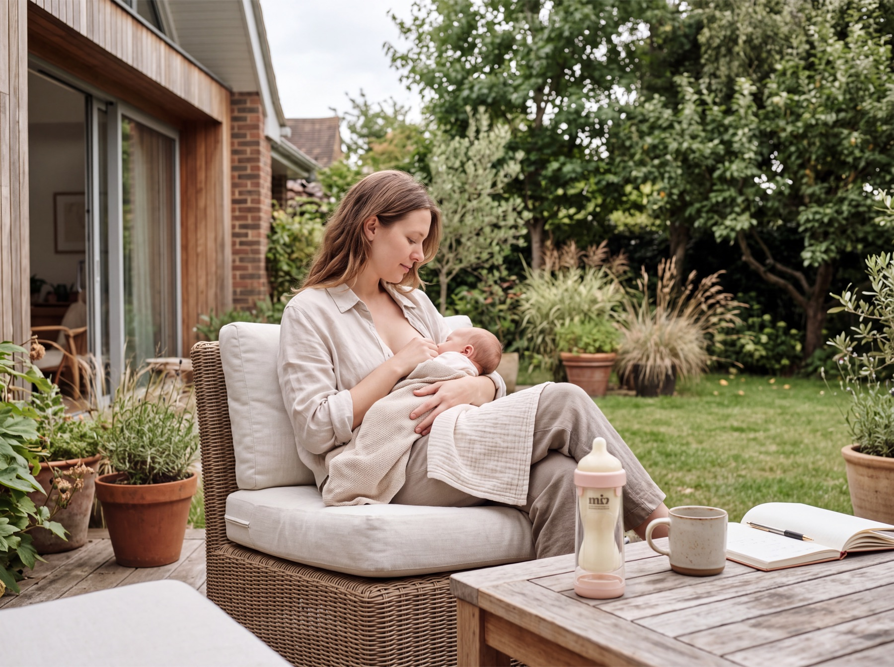
Milk only flows when your baby works for it, just like at the breast.

 At the breast
With Mimyo
At the breast
With Mimyo

With Mimyo, your baby does the work. They put in the effort with every feed, the same way they would at the breast.
To draw the milk out, your baby builds real suction with the tongue and jaw. There is no air intake by design, so nothing is gulped down along the way.
That effort does more than feed your baby. Feed after feed, it helps build a stronger tongue & jaw, healthy nasal breathing and ultimately, better sleep.
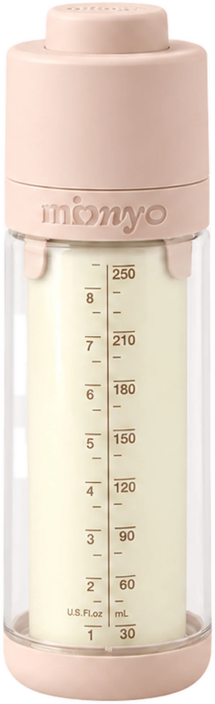
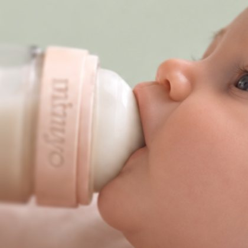
Your baby works for the milk, just like at the breast. That effort is what supports healthy tongue, jaw and face development, feed after feed.
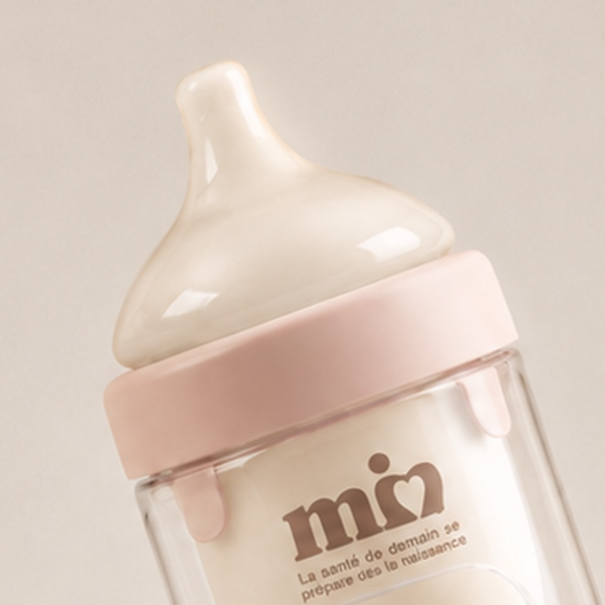
A patented dual-valve system means no air enters while your baby feeds, only milk. Designed for zero colic.
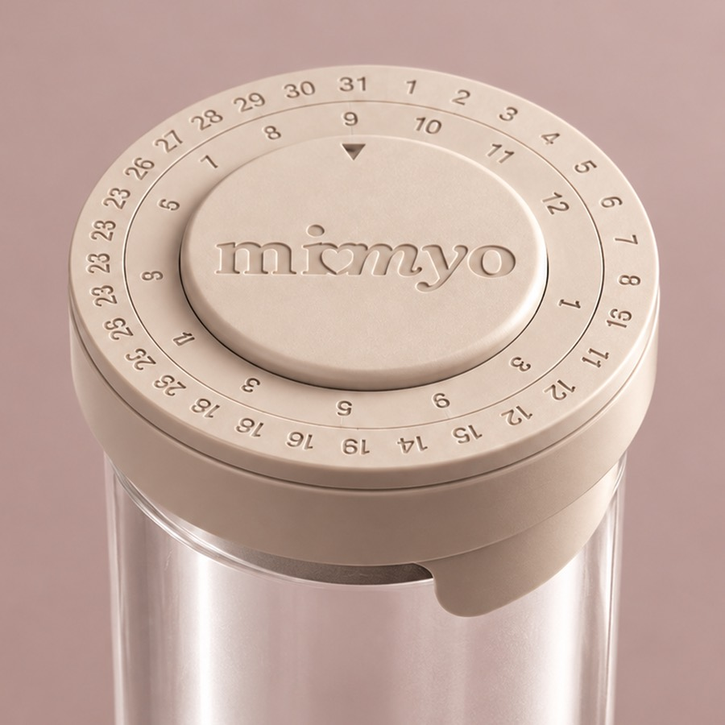
Milk changes throughout the day, so mark it AM or PM with our included storage pouch. The right milk, right on time, just like nature intended.
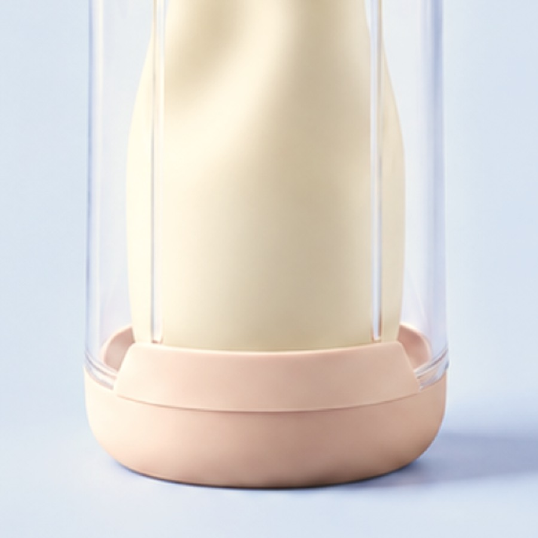
Nothing flows by gravity. Milk moves only when your baby works for it, exactly as at the breast.

In the pack
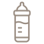
Mimyo device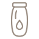
Milk pouch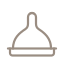
TeatPouches, teats, valves and a dishwasher basket are also sold separately.
*Clinical study on 150 children, CHU Rabat (Morocco).
We are always ready to help you with a clear answer if you have other questions. Ask your pharmacist or paediatrician for advice.
Get in touch